Verizon · AI · Telecom · Sponsored project
Explaining the bill: AI for billing transparency
"Why is this bill $50 more than last month?" Customers can't get a simple answer from phone providers today. The AI Bill Summary explains each change in plain language, and 87.5% of testers were satisfied.
Overview
Verizon customers struggle to find billing details, make sense of the numbers, and get past the jargon. A team of seven interdisciplinary designers (UX, UI and more) partnered with Verizon's Experience Design team to answer one question: how can AI improve the way customers understand their bill?
Over 16 weeks the team researched the problem across four carriers, designed an AI-powered bill experience, and tested it with 16 people in a Figma prototype. The work moved from open exploration to one focused bet: make the bill explain itself.
Your bill
A bill that explains itself
The Problem
“Why is my bill $50 more than last month?” Sarah, account holder on a family plan
Verizon bills mix taxes, device payments, and one-time fees, and customers can't tell what changed or why. Confusion leads to frustration and support calls. The AI help that exists today gives generic answers that aren't tied to the bill and sends people to broad FAQ pages, so the charges stay unexplained. As one customer put it: "If I can't understand my bill, I'll just switch providers."
Process
Milestone 1Exploration
The project began with a broad question about AI in customer service. Interviews, reviews from other carriers, and a heuristic evaluation of Verizon showed the same thing: the biggest frustration was not understanding the bill. That narrowed the focus and gave the team a clear question to design for.
How could AI improve Verizon's customer service?
The project began with an open goal, before any research narrowed it down: use AI to make customer service better without annoying customers. The first step was exploring Verizon’s existing customer service experience. Besides chat, it included AI customer service over the phone and redirects to FAQs.
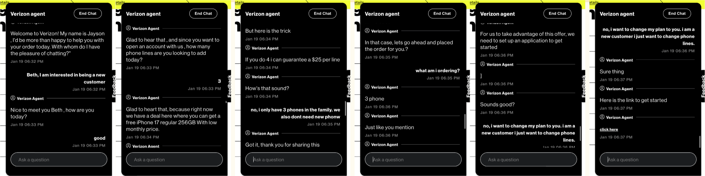
7 customers.
4 carriers.
Nielsen’s 10.
15+ sources.
7 Verizon customers were interviewed about their bills and support. Three themes came up again and again.
- Billing is a mystery. “Billing is always confusing and often changes without knowing why.”
- Support can’t explain it either. “People on the phone normally can’t explain why the price is what it is.” Several avoid calling because of long holds.
- Open to AI, if it’s accurate. One liked the idea of an AI bill breakdown, as long as it’s right.
App Store, Reddit and Google reviews were read for Verizon, T-Mobile, AT&T and Mint. The same complaints came up everywhere: long waits, hard-to-reach humans, and chat that loops.
Takeaway: support frustrations are similar across providers, so the best experience limits how much customers need to contact support at all.
Verizon’s billing flow was scored against Nielsen’s 10 usability heuristics. These four stood out.
15+ sources were reviewed on digital customer experience, trust in automated support and how people feel about AI.
The result is a bill explainer, not a chatbot. It says why a bill changed, stays out of high-stress moments, and sends people to a real customer service agent when they need one.
Billing transparency and trust
Customers can’t tell why their bill changes.Across interviews, reviews and the heuristic evaluation, the same problem kept coming up, and support often can’t explain it either. Customers wanted proactive automation and summaries they could trust.
People don’t want to talk to AI about real issues.Reviews of Verizon, T-Mobile and Mint described chatbots that handle simple tasks, then loop, promise help and leave people hanging, or stand in the way of reaching a human. That showed AI shouldn’t replace support. It should explain the bill before anyone needs to call, and connect them to a real agent when they do.
Use AI to help Verizon customers understand their bills, so they feel informed and satisfied?
This question guided every design decision after it. The aim was at least 80% positive feedback in testing, and a bill experience customers trust.
Click a layer to see more.
Milestone 2Where does billing break down?
With the problem scoped, the next step was to see where billing breaks down for real customers. Comparing six billing apps showed competitors explaining bills in plain language while Verizon does not. Cognitive walkthroughs showed testers could find the bill in seconds but not explain it, stuck on unclear numbers and jargon. Interviews and journey maps showed the rest: support often cannot explain a changed bill either, and long holds make people avoid calling.
Changes go unexplained
People on the phone normally can’t explain why the price is what it is.Customer interview
In interviews, customers described bills they couldn’t explain, and said even support often couldn’t either.
Blame is unclear
Four lines, and I can’t tell which one made my bill go up.Cognitive walkthrough
Testers found the bill quickly, but the breakdown never showed which line or person drove the increase.
Jargon gets in the way
If I can’t understand my bill, I’ll just switch providers.Competitive analysis
Rocket Money, Xfinity and T-Mobile show totals and sections. Google Fi was the one that said why, in plain words.
Customers need to know what changed and who caused it, in words they understand. So the bill explains each change in plain language and breaks it down by member.
Designing for Sarah
The findings pointed to one person in particular: someone who manages a shared plan. When a bill covers several people, “what changed” and “who caused it” get harder to answer. Sarah, an HR consultant paying for four lines, became the primary persona.
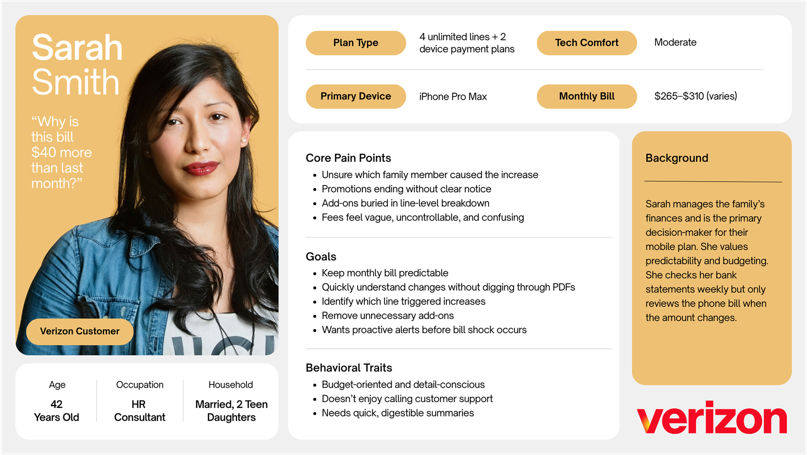
Milestone 3Design & testing
The team sketched in short rounds, then consolidated the strongest ideas into one direction on a whiteboard and built mid-fidelity screens in Figma. 10+ screens were tested with 16 participants, using A/B comparisons and think-aloud walkthroughs.
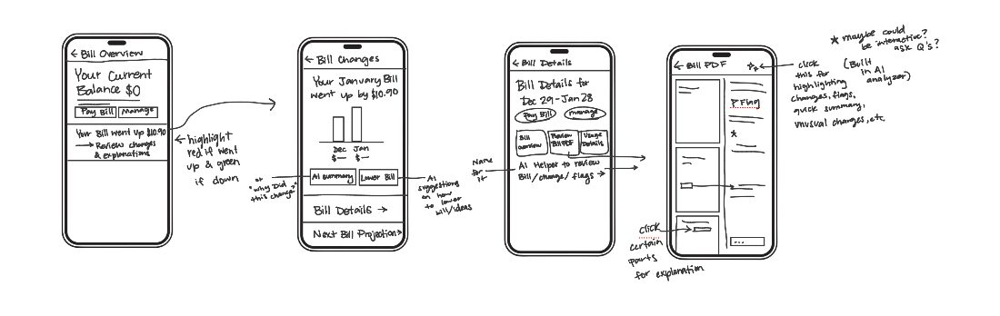
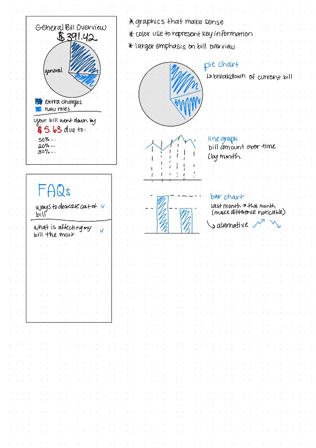
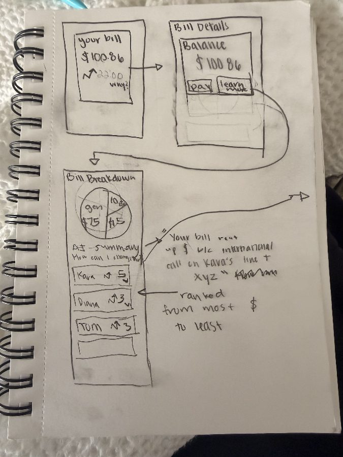
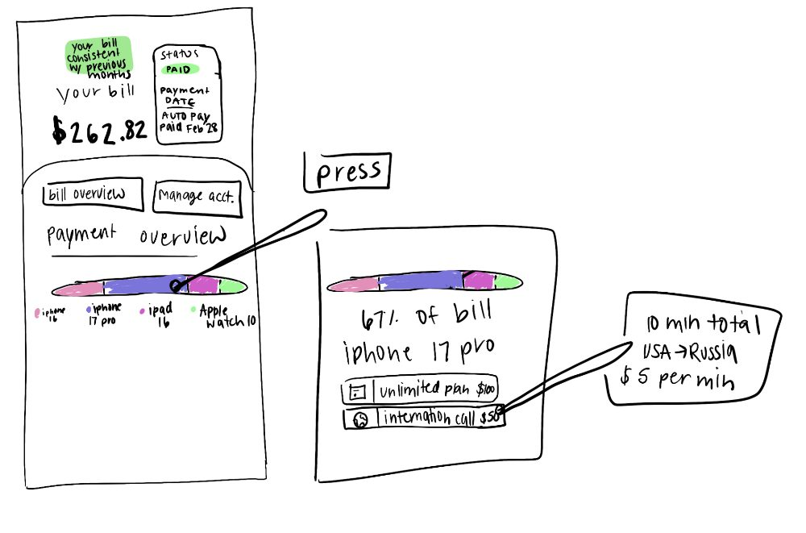
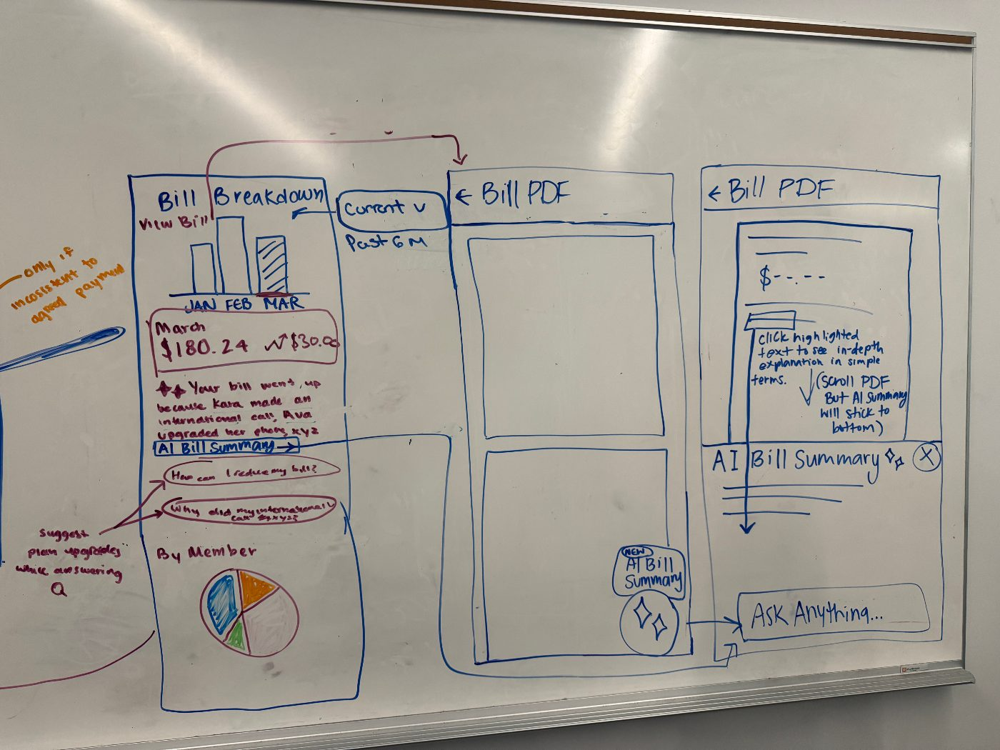
User testing
Testing ran throughout every phase of the design process, first on sketches and then on mid-fidelity screens, with the designs refined between rounds. The goal was 80% user satisfaction.
sessions
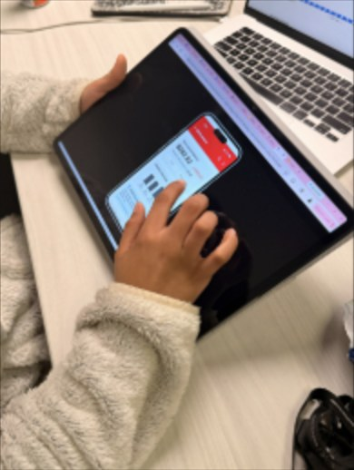
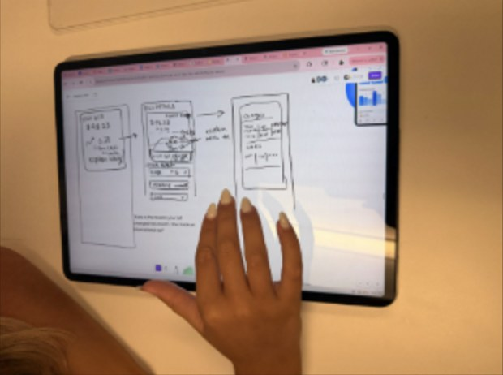
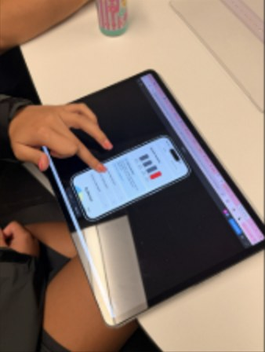
Testing on sketches and on the prototypeAAI shortcut in the top strip
BStandard navigation only
ABar chart above the AI summary
BAI summary first, chart below
APie chart above the FAQ
BFAQ above the pie chart
AFloating AI button over the PDF
BLink in a banner above it
ABottom sheet over the PDF
BFull-screen modal
How the tests were run
Each screen compared two versions that differed in a single element, so it was clear what caused a preference. The version each participant saw first was switched, so one did not bias the next. The 80% satisfaction goal was set before testing began, and participants were asked to think aloud to reveal the reason behind each choice.
Testers preferred the simpler, more visual layout with a clear hierarchy. Between rounds, task times dropped and fewer people needed prompting.
The Solution
The solution is an AI bill explainer, not a chatbot. It lives inside the bill Sarah already knows and tells her what changed and why, in plain language, using her own account. It is not meant to replace a customer service agent. It answers the question people usually call about, so a call is only needed when something really needs a person.
Here is how Sarah uses it.
Notice the change on Home
Sarah sees her bill is up $50.01. A sparkle shortcut and a “What changed” button sit right beside the number, so the answer is one tap away and she does not have to call. This is the “never block a human” idea: the AI sits beside the bill, not in front of support, because many people fear AI will keep them from an agent.
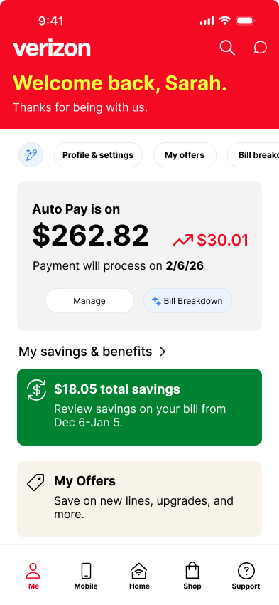
See who caused the change
The Bill Breakdown opens with the trend and a short AI summary, then scrolls down to a per-member split and the biggest change. The literature review found people trust automation more when it gives reasons, so every change shows who, what and when. Complexity breeds distrust, so the trend is one small chart.
Your bill went up because Kara made an international call, Ava upgraded her phone, and every line increased $5 at renewal.
View full AI breakdown →- Kara 28%
- Ava 28%
- Sarah 22%
- Lizzy 22%
Sarah +$5.00 · renewal
Kara +$19.66 · call + renewal
Ava +$20.35 · phone + renewal
Lizzy +$5.00 · renewal
Your bill went up because Kara made an international call, Ava upgraded her phone, and every line increased $5 at renewal.
View full AI breakdown →- Kara 28%
- Ava 28%
- Sarah 22%
- Lizzy 22%
Sarah +$5.00 · renewal
Kara +$19.66 · call + renewal
Ava +$20.35 · phone + renewal
Lizzy +$5.00 · renewal
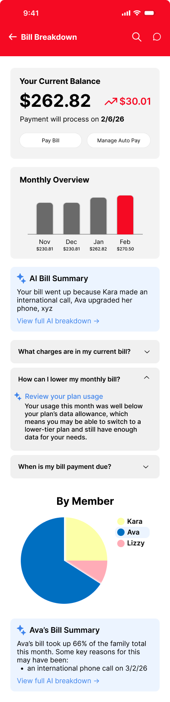
Ask about any charge
The familiar PDF stays. One tap on the sparkle opens the AI Bill Summary, which explains why the bill changed in plain language. You can then ask anything about it. The PDF stays because complexity breeds distrust and familiar things feel safe. Answers are labeled “Written by AI from your bill” and note that taxes and fees are included, so nothing is hidden.
✦ AI Bill Summary ✕
Your bill is up $50.01
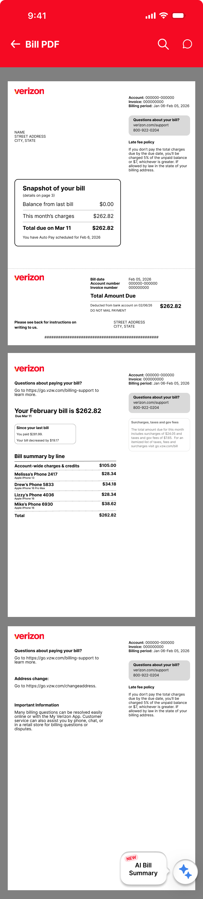
Tap any line
Tapping a line on the bill opens the same sheet for that line, so you can see exactly what changed on it and ask about it. The AI explains in short, plain sentences, and the support number stays on the bill if Sarah would rather talk to a person.
✦ AI Bill Summary ✕
Kara's line is up $19.66
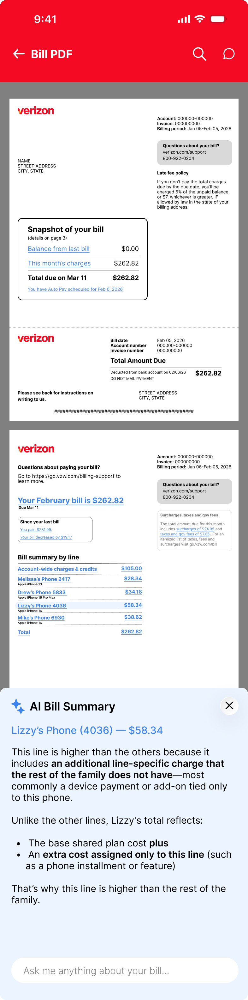
Results
The AI Bill Summary significantly improved how well users understood their bill, and users consistently preferred simpler, more visual layouts. Some users also wanted a real human for specific follow-up questions or to report a problem, like a plan price they didn’t know went up. Adding one could raise satisfaction further.
14 of 16 participants were satisfied with the AI Bill Summary.
The goal was 80% satisfied. The result was 87.5%.
Measures of success
The AI sits directly in the billing flow, so answers come from the user's own bill and common tasks take fewer steps.
The 80% goal was met, with 87.5% satisfied. Each test round simplified the layout and navigation.
The AI explains what changed and why, with consistent, specific answers instead of generic ones.
Short sprints, weekly goals and frequent check-ins kept every milestone on schedule.
Impact & learnings
My impact
As project manager, I kept seven designers aligned through phase champions and weekly client check-ins. I used AI to draft plans and timelines, summarize meetings, and turn action items into tasks, which cut my planning and admin time by roughly 40%.
I helped run customer interviews, a heuristic evaluation, and a competitive analysis. AI-assisted synthesis took raw interview notes to clear themes in less than half the time it took before.
I pitched the team’s direction to Verizon and turned their feedback into changes at each milestone.
I planned and ran usability testing with 16 participants.
What I learned
Pitching to a client works best when the findings are framed as one clear direction.
Naming a champion for each phase made it clear who owned what.
Spending the first four months on planning surfaced risks early, so the scope could narrow to billing without losing time.
The BIM specialist's insights made the user testing sharper.
How I worked faster with AI
The project was about AI, so I made it part of how the team worked too. As project manager, I built AI into the workflow in four places.
AI drafted the project plan and milestone timelines, which I refined with the team.
~2 dayssaved over the projectAI turned meeting notes into summaries and action items, so every member left each meeting knowing their next step.
1–2 hrssaved every weekAI helped cluster interview and review findings into themes, which were verified against the source quotes.
>50%faster synthesisAI kept status updates and client check-in notes consistent across the team and the client.
Minutesinstead of an afternoonLimitations & next steps
Limitations
Next steps
Navigation was unclear. Navigation clarity and task flow still need work.
1Fix the navigation issues found in testing.
Testing used sample numbers. Participants saw made-up bill data, not their own.
2Test with real bill data instead of sample numbers.
Human support wasn’t designed. There wasn’t time to define when a human should step in, though some users wanted a real person for specific follow-up questions or to report a problem, like a plan price they didn’t know went up.
4Define when human support steps in to answer follow-up questions and handle reported problems, which could raise satisfaction further.